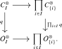
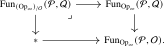

This section extends the preceding theory from symmetric monoidal \(\infty \)-categories to monoids over an arbitrary \(\infty \)-operad \(\Oo \). Symmetric monoidal \(\infty \)-categories are recovered by taking \(\Oo =\Comm \).
Definition 14.4.1. Let \(D\) be an \(\infty \)-category with finite products. An \(\Oo \)-monoid in \(D\) is a finite-product-preserving functor \(\Oo ^{\otimes } \to D\). We write \[ \Mon _{\Oo }(D) \quad := \quad \Fun ^{\times }(\Oo ^{\otimes },D) \quad \subseteq \quad \Fun (\Oo ^{\otimes }, D) \] for the full subcategory of \(\Oo \)-monoids in \(D\).
When \(D\) is equipped with its cartesian monoidal structure, \(\Oo \)-monoids in \(D\) will be identified with \(\Oo \)-algebras in Theorem 15.3.11.
Definition 14.4.2. An \(\Oo \)-monoidal \(\infty \)-category is an \(\Oo \)-monoid in \(\Cat _{\infty }\). When \(\Oo = \Assoc \), we refer to \(\Oo \)-monoidal \(\infty \)-categories simply as monoidal \(\infty \)-categories.
Example 14.4.3. When \(\Oo = \Triv \), an \(\Oo \)-monoidal \(\infty \)-category is just an \(\infty \)-category.
The multimorphism operad functor \(\Mm \colon \Cat _{\infty }^{\otimes } \to \Op _{\infty }\) admits an analogue \(\Mm _{-/\Oo }\colon \Mon _{\Oo }(\Cat _{\infty }) \to (\Op _{\infty })_{/\Oo }\) for \(\Oo \)-monoidal \(\infty \)-categories. This relies on the following relative analogue of Lemma 14.2.4.
Lemma 14.4.4. Let \(\Oo \) be an \(\infty \)-operad and let \(q\colon C^{\otimes } \to \Oo ^{\otimes }\) be a cocartesian fibration. Then the composite \[ C^{\otimes } \xrightarrow {q} \Oo ^{\otimes } \xrightarrow {p_{\Oo }} \Span (\Fin ) \] exhibits \(C^{\otimes }\) as an \(\infty \)-operad if and only if the functor \(\Str ^{\cc }(q)\colon \Oo ^{\otimes } \to \Cat _{\infty }\) preserves finite products. In this case, the morphism \(q\colon C^{\otimes } \to \Oo ^{\otimes }\) is automatically a morphism of \(\infty \)-operads.
Proof. Write \(F:=\Str ^{\cc }(q)\) and \(p:=p_{\Oo }\). Condition (i) of Proposition 14.1.9 always holds for \(pq\): given a backwards span in \(\Span (\Fin )\) and an object \(X\in C^{\otimes }\), first choose a \(p\)-cocartesian lift starting at \(q(X)\) and then a \(q\)-cocartesian lift starting at \(X\). The resulting morphism in \(C^{\otimes }\) is \((pq)\)-cocartesian, as follows by pasting the two pullback squares that express the respective cocartesian universal properties.
For every finite set \(I\), cocartesian transport along the maps \(\rho _i\) gives a commutative square

The top horizontal functor is the one appearing in condition (ii), since a \(q\)-cocartesian lift lying over a \(p\)-cocartesian lift is \((pq)\)-cocartesian. The bottom horizontal functor is an equivalence because \(\Oo \) is an \(\infty \)-operad. Consequently the top horizontal functor is an equivalence if and only if the square is a pullback. This is a square of cocartesian fibrations, so the pullback condition may be checked on fibers. Indeed, over an object \(o\in \Oo ^{\otimes }_I\) with components \(o_i\), the \(i\)-th component sends \(X\in F(o)\) to the target of a \(q\)-cocartesian lift over \(o\to o_i\), which under straightening is precisely \(F(o\to o_i)(X)\). Thus the induced functor on fibers is the canonical comparison \[ F(o)\longrightarrow \prod _{i\in I}F(o_i). \] The maps \(o\to o_i\) are the product projections in \(\Oo ^{\otimes }\). It follows that these fiberwise comparisons are equivalences whenever \(F\) preserves finite products. Conversely, if condition (ii) holds, the square is a pullback, so all the component comparisons are equivalences. Every object of \(\Oo ^{\otimes }\) is the product of its components, and the components of a product \(\prod _a o_a\) are obtained by concatenating those of the objects \(o_a\). The product comparison for the family \((o_a)_a\) becomes an equivalence after composing with the product of their component comparisons, so it is itself an equivalence. Thus condition (ii) for \(pq\) holds if and only if \(F\) preserves finite products.
Under these equivalent conditions, condition (iii) is automatic. Indeed, for \(X\in C^{\otimes }_I\) over \(o\), let \(X\to X_i\) be \(q\)-cocartesian lifts of the product projections \(o\to o_i\). By Reference ? of [Cisinski et al. (2026)], these maps exhibit \(X\) as the product of the \(X_i\) in \(C^{\otimes }\). They are also \((pq)\)-cocartesian over the maps \(\rho _i\), as observed above. The characterization of \(\infty \)-operads now shows that \(pq\) exhibits \(C^{\otimes }\) as an \(\infty \)-operad if and only if \(F\) preserves finite products. Finally, the same proposition shows that \(q\) preserves finite products, so it is a morphism of \(\infty \)-operads. □
Definition 14.4.5. Given an \(\Oo \)-monoidal \(\infty \)-category \(C\), we let \(p_C\colon C^{\otimes } \to \Oo ^{\otimes }\) denote its cocartesian unstraightening, which by the lemma defines an \(\infty \)-operad \(\Mm _{C/\Oo } = (C^{\otimes },p_{\Oo } \circ p_C)\). Since \(p_C\) is a morphism of \(\infty \)-operads, it turns \(\Mm _{C/\Oo }\) into an object of the slice category \((\Op _{\infty })_{/\Oo }\), producing a functor \[ \Mm _{-/\Oo }\colon \Mon _{\Oo }(\Cat _{\infty }) \to (\Op _{\infty })_{/\Oo }. \] If \(\Pp \to \Oo \) and \(\Qq \to \Oo \) are two \(\infty \)-operads over \(\Oo \), we denote by \(\Fun _{(\Op _{\infty })_{/\Oo }}(\Pp ,\Qq )\) the \(\infty \)-category of operad maps \(\Pp \to \Qq \) over \(\Oo \), defined as the following fiber:

As a special case, we define the \(\infty \)-category \(\Pp /\Oo \)-algebras in \(C\) as \[ \Alg _{\Pp /\Oo }(C) := \Fun _{(\Op _{\infty })_{/\Oo }}(\Pp ,\Mm _{C/\Oo }). \] When \(\Oo = \Assoc \), we usually drop \(\Oo \) from the notation and abusively denote the \(\Pp /\Assoc \)-algebras in \(C\) by \(\Alg _{\Pp }(C)\). When \(\Pp = \Assoc \), we also write this as \(\Alg (C)\).
If \(C\) is symmetric monoidal and \(\Pp \to \Comm \) is an \(\infty \)-operad over \(\Comm \), then this relative definition agrees with the earlier one: \[ \Alg _{\Pp /\Comm }(C)\simeq \Alg _{\Pp }(C). \] Indeed, \(\Comm \) is terminal in \(\Op _{\infty }\), so passing to the slice over \(\Comm \) imposes no additional condition on operad maps.
Definition 14.4.6. Given \(\Oo \)-monoidal \(\infty \)-categories \(C\) and \(D\), a lax \(\Oo \)-monoidal functor \(C \to D\) is an operad morphism \(\Mm _{C/\Oo } \to \Mm _{D/\Oo }\) over \(\Oo ^{\otimes }\).
Proposition 14.4.7 (cf. [Lurie (2017), Corollary 7.3.2.7]). Let \(L\colon C \to D\) be an \(\Oo \)-monoidal functor between \(\Oo \)-monoidal \(\infty \)-categories. Assume that for every color \(o \in \Oo ^{\simeq }\), the functor \(L_o\colon C_o \to D_o\) admits a right adjoint \(R_o\colon D_o \to C_o\). Then the functor \(L^{\otimes }\colon C^{\otimes } \to D^{\otimes }\) admits a right adjoint \(R^{\otimes }\colon D^{\otimes } \to C^{\otimes }\). The functor \(R^{\otimes }\) has a canonical structure over \(\Oo ^{\otimes }\) for which \(L^{\otimes }\dashv R^{\otimes }\) is a relative adjunction, and with this structure it is a morphism of operads over \(\Oo \). In particular, \(L\) admits a lax \(\Oo \)-monoidal right adjoint \(R\).
Proof. The proof is entirely analogous to that of Proposition 14.3.6 and is left to the reader. □
Proposition 14.4.8 (cf. [Lurie (2017), Corollary 7.3.2.12]). Let \(R\colon D \to C\) be an \(\Oo \)-monoidal functor between \(\Oo \)-monoidal \(\infty \)-categories. Assume that the following conditions hold:
- (1)
-
For every color \(x \in \Oo ^{\simeq }\), the functor \(R_x\colon D_x \to C_x\) admits a left adjoint \(L_x\colon C_x \to D_x\).
- (2)
-
For every multimorphism \(\alpha \colon X = (x_1, \dots , x_n) \to y\) in \(\Oo ^{\otimes }\), the composite transformation \[ L_y\alpha _!(-) \xrightarrow {\eta } L_y\alpha _!(R_XL_X(-)) \xrightarrow {L_y(\lax ^{\alpha }_R)} L_yR_y\alpha _!L_X(-) \xrightarrow {\epsilon } \alpha _!L_X(-) \] of functors \(C^{\otimes }_X \to D^{\otimes }_y\) is an isomorphism.
Then the functor \(R^{\otimes }\colon D^{\otimes } \to C^{\otimes }\) admits a left adjoint \(L^{\otimes }\colon C^{\otimes } \to D^{\otimes }\). The functor \(L^{\otimes }\) has a canonical structure over \(\Oo ^{\otimes }\) for which \(L^{\otimes }\dashv R^{\otimes }\) is a relative adjunction, and with this structure it is a morphism of cocartesian fibrations over \(\Oo ^{\otimes }\). In particular, \(R\) admits a strong \(\Oo \)-monoidal left adjoint \(L\).
Proof. The proof is entirely analogous to that of Proposition 14.3.11 and is left to the reader. □
The limit result for algebras also admits the following relative form.
Proposition 14.4.9 (cf. [Lurie (2017), Corollary 3.2.2.5]). Let \(q\colon \Pp \to \Oo \) be a morphism of \(\infty \)-operads, let \(C\) be an \(\Oo \)-monoidal \(\infty \)-category, and let \(I\) be a small \(\infty \)-category. Assume that each fiber \(C_x\), for \(x\in \Oo ^{\simeq }\), admits \(I\)-indexed limits. Then \(\Alg _{\Pp /\Oo }(C)\) admits \(I\)-indexed limits, and the evaluation functors \[ \ev _y\colon \Alg _{\Pp /\Oo }(C)\to C_{q(y)}, \qquad A\mapsto A_y \qquad (y\in \Pp ^{\simeq }), \] jointly create them.
Proof. The proof is analogous to that of Proposition 14.3.10. Applying \(\Fun (I,-)\) fiberwise gives an \(\Oo \)-monoidal category whose fiber at \(x\) is \(\Fun (I,C_x)\), and algebras in it identify with \(I\)-diagrams in \(\Alg _{\Pp /\Oo }(C)\). The fiberwise constant-diagram functors form an \(\Oo \)-monoidal functor, with lax \(\Oo \)-monoidal right adjoint given in each fiber by \(\lim _I\). By Proposition 14.4.7, these functors form a relative adjunction over \(\Oo ^{\otimes }\), so Lemma 14.3.5 gives the required right adjoint to the constant-diagram functor after applying \(\Fun _{/\Oo ^{\otimes }}(\Pp ^{\otimes },-)\) and restricting to operad maps. Its evaluation at \(y\) is \(\lim _I\) in \(C_{q(y)}\). The evaluation functors jointly detect isomorphisms, so they jointly create the limits. □
Corollary 14.4.10. Let \(C\) be a monoidal \(\infty \)-category and let \(I\) be a small \(\infty \)-category such that \(C\) admits \(I\)-indexed limits. Then \(\Alg (C)\) admits \(I\)-indexed limits, and the forgetful functor \(\Alg (C)\to C\) creates and preserves them. The same holds for the forgetful functor \(\CAlg (C)\to C\) when \(C\) is symmetric monoidal.
Proof. This is the one-color case of Proposition 14.4.9: a monoidal \(\infty \)-category is an \(\Assoc \)-monoidal \(\infty \)-category, with \(\Alg (C)=\Alg _{\Assoc /\Assoc }(C)\), and a symmetric monoidal \(\infty \)-category is a \(\Comm \)-monoidal \(\infty \)-category, with \(\CAlg (C)=\Alg _{\Comm /\Comm }(C)\). □
Corollary 14.4.11. Let \(C\) be a monoidal \(\infty \)-category with a terminal object \(T\). Then \(T\) carries a unique associative algebra structure, and it is terminal in \(\Alg (C)\). When \(C\) is symmetric monoidal, the same holds for the commutative algebra structure and \(\CAlg (C)\).
Proof. Apply Corollary 14.4.10 to the empty diagram. It produces a terminal algebra \(A\) whose underlying object is \(T\). If \(B\) is any other algebra with underlying object \(T\), the unique map \(B\to A\) has an isomorphism as its underlying morphism, and is therefore itself an isomorphism. Moreover, both \(\Hom _{\Alg (C)}(B,A)\) and \(\Hom _C(T,T)\) are contractible, so the anima of such maps lying over \(\id _T\) is contractible. It follows that the fiber of algebra structures on \(T\) is contractible. The commutative case is identical. □
Generated from the authoritative LaTeX source.